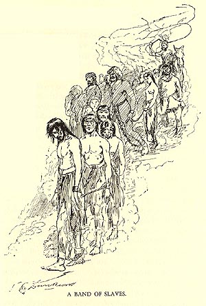

|

Traveling through Arthurian England with Sandy, Hank
encounters a gang of chained slaves being driven toward
markets, and describes them in a long passage that
emphasizes (1) their great physical and emotional suffering
("not a face among all these half hundred people but . . .
bore that set expression of hopelessness which is bred of
long and hard trials and old acquaintance with despair"),
(2) the viciousness of the "trader in charge" and the
callousness with which others watch him strip and lash a
young woman slave "till her back was flayed, she shrieking
and struggling the while," and (3) the anguish of a family
being "torn apart by force," a picture that "wrings
[Hank's] heartstrings whenever I think of it." There is no more explicit dramatization of the horror of slavery in all MT's published work. The description of the slaves' faces draws on a memory from Sam Clemens' childhood in Hannibal. MT took other details in the passage from a slave narrative by Charles Ball, titled Slavery in the United States (1837), as you can see for yourself in the CONNECTICUT YANKEE SOURCES section of the archive. Nothing in the passage, however, directs readers of Connecticut Yankee to associate this terrific scene with American history. The Barrett Collection, UVA PS1308 .A1 1889 |